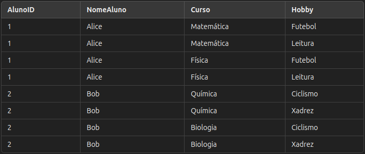
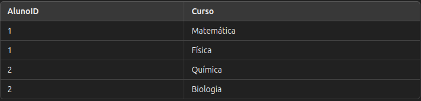
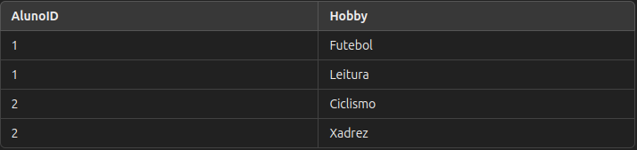
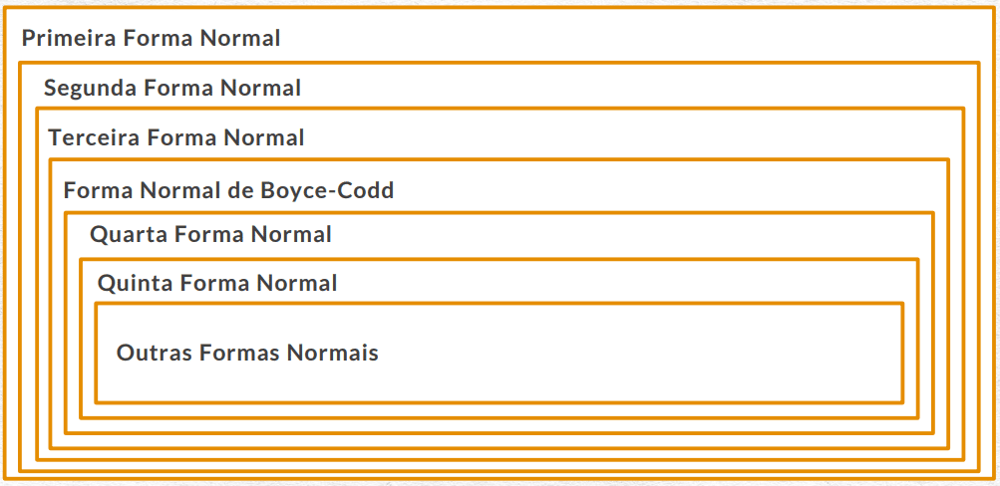

Normalização de Tabela: NF4
A 4ª Forma Normal (4NF)
é um passo avançado na
normalização de dados em bancos de dados relacionais.
Ela visa eliminar dependências multivaloradas,
um tipo de redundância que pode aparecer quando uma
tabela contém atributos independentes que não têm relação direta entre si,
mas compartilham a mesma chave.
Definição e Regras da 4ª Forma Normal
Uma tabela está na 4ª Forma Normal (4NF) se:
- Ela já está na 3ª Forma Normal (3NF) e,
frequentemente, na Forma Normal de Boyce-Codd (BCNF) ,
o que significa que não há dependências funcionais transitivas.
- Ela não possui dependências multivaloradas não triviais,
ou seja, se um atributo depende da chave primária e possui valores múltiplos,
ele não deve coexistir com outro atributo multivalorado na mesma tabela,
a menos que esses valores dependam diretamente uns dos outros.
Exemplo Prático: Tabela de Alunos-Cursos (não normalizada)
Imagine uma tabela de "Inscrições" em que cada aluno pode estar
inscrito em múltiplos cursos e ter múltiplos hobbies.
Nessa estrutura, há duas informações
multivaloradas independentes – cursos e hobbies – que podem gerar redundância.

Problema de Dependência Multivalorada
Na tabela acima:
- AlunoID está relacionado tanto a múltiplos cursos quanto a múltiplos hobbies,
o que resulta em uma dependência multivalorada. Cursos e hobbies são independentes entre si, mas
compartilham o mesmo identificador de chave, o que leva à repetição e aumento do volume de dados.
Aplicando a 4NF
Para resolver essa redundância e aplicar a 4NF,
dividimos a tabela em duas tabelas separadas,
cada uma armazenando uma dependência multivalorada única.Isso resulta nas seguintes tabelas:
1. Tabela: Inscrições em Cursos
Relaciona os alunos aos cursos nos quais estão inscritos, sem incluir hobbies.

2. Tabela: Hobbies dos Alunos
Relaciona os alunos aos hobbies que possuem, sem incluir informações sobre cursos.

Explicação da Aplicação da 4NF
Após dividir as informações,
cada tabela agora armazena apenas uma dependência multivalorada:
- inscrições em Cursos: A tabela registra quais alunos estão inscritos em quais cursos,
eliminando qualquer redundância relacionada a hobbies.
- Hobbies dos Alunos:
A tabela registra os hobbies de cada aluno, sem informações duplicadas sobre os cursos.
Cada tabela agora cumpre os requisitos da 4ª Forma Normal:
- Está na 3ª Forma Normal (3NF) e, geralmente,na Forma Normal de Boyce-Codd (BCNF) .
- Não possui dependências multivaloradas
independentes na mesma tabela, garantindo a integridade dos dados.
Benefícios da 4ª Forma Normal
Aplicar a 4ª Forma Normal traz várias vantagens:
- Eliminação de Redundâncias: Cursos e hobbies não são duplicados,
o que reduz o espaço de armazenamento e evita inconsistências.
- Eficiência na Atualização:
Alterações em hobbies ou cursos ocorrem em um único lugar, sem necessidade de repetir dados.
- Consulta e Integração de Dados Mais Simples: Dividir dependências
multivaloradas em tabelas separadas facilita o acesso e uso dos dados sem redundância.
- Redução de Anomalias de Inserção e Exclusão: Garantir que cada tabela tenha apenas uma dependência multivalorada evita problemas
ao inserir ou excluir dados, como a necessidade de registros vazios para hobbies ou cursos.

Embora a NF4 seja um Nível avançado de normalização,
ela é essencial para garantir a integridade e a precisão dos dados em sistemas complexos.
Ao eliminar dependências multivaloradas, as tabelas se tornam mais eficientes e fáceis de gerenciar,
oferecendo uma visão geral de cada etapa e suas finalidades.
Perguntas sobre NF4